Enforces isometric plot design: aspect ratio of 1, identical
ranges for x and y axes. Can be used meaningfully with
+ facet_wrap(scales = 'free' ...).
See also
ggplot_add.ggplot_isometric
Other isometric:
ggplot_add.ggplot_isometric(),
ggplot_add.ggplot_symmetric(),
symmetric()
Examples
library(magrittr)
library(ggplot2)
data.frame(x = 1:5, y = 3:7) %>%
ggplot(aes(x, y)) + geom_point() + isometric()
